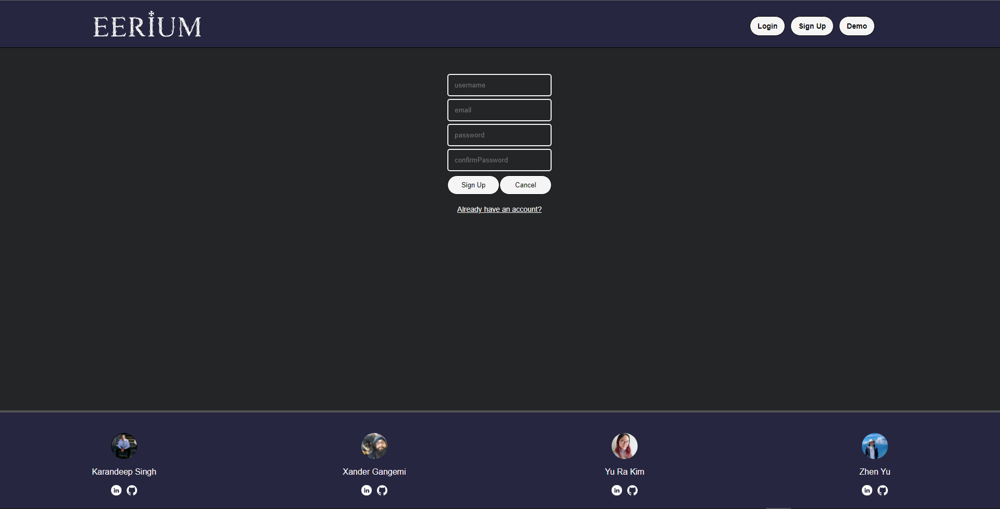

-

- 
A Medium.com Clone
Eerium is a website made by Alexander Gangemi, YuRa Kim, Zhen Yu, and Karandeep Singh for users to easily and freely post their thinking on any topic and connect with millions of readers. Eerium focuses on paranormal and occult activities found in and out of everyday life.